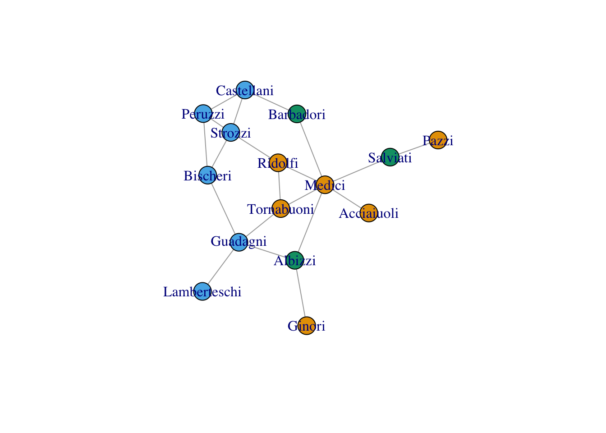
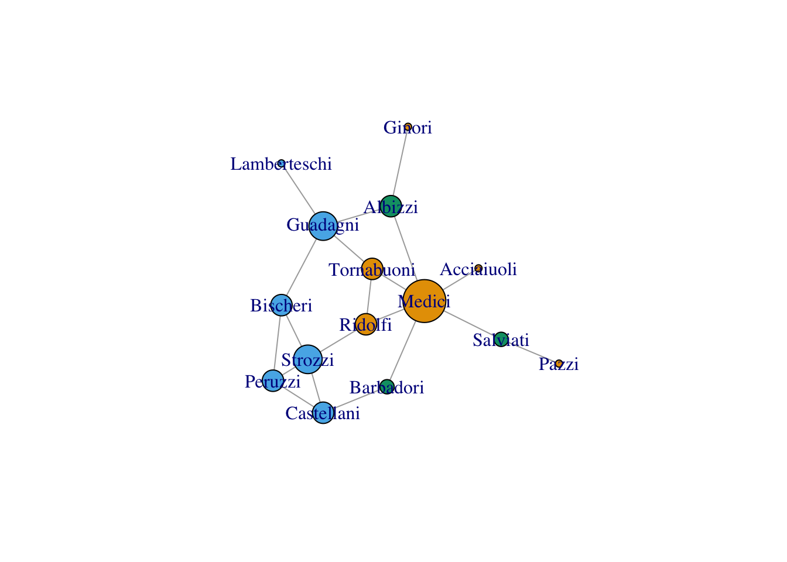
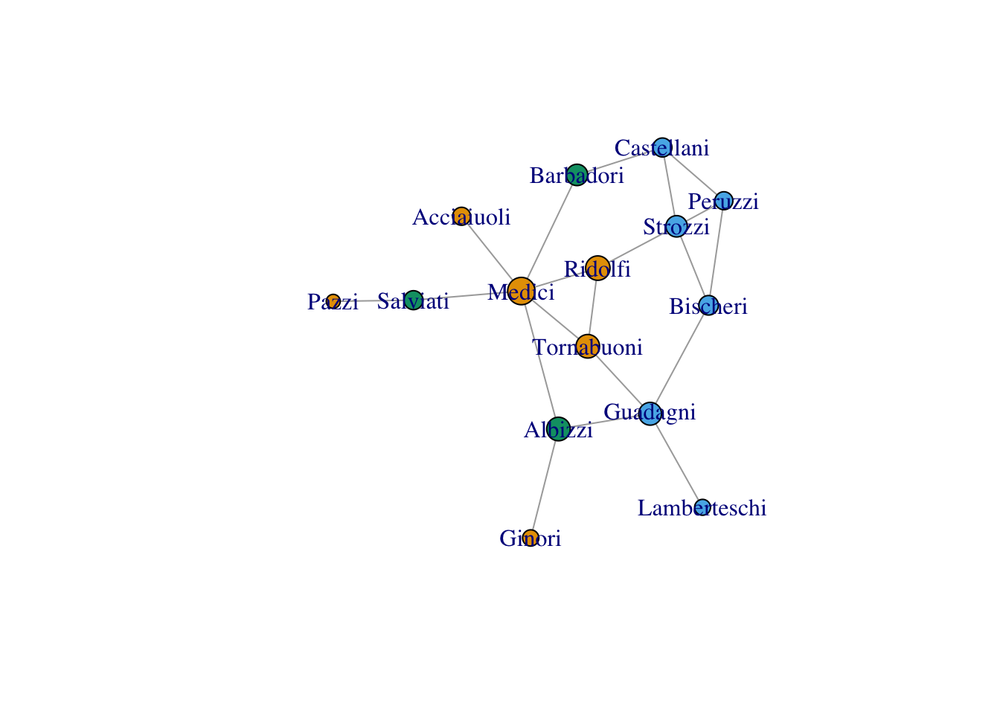
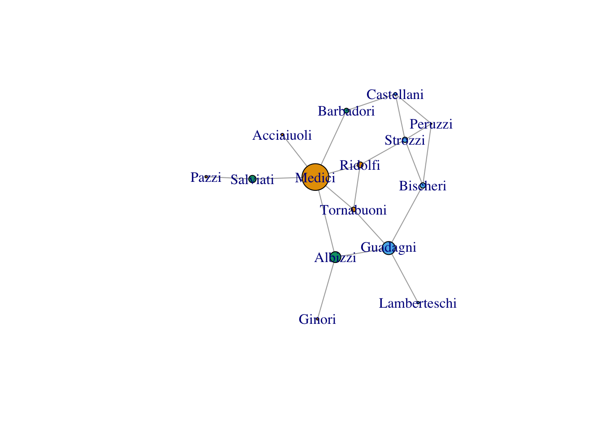
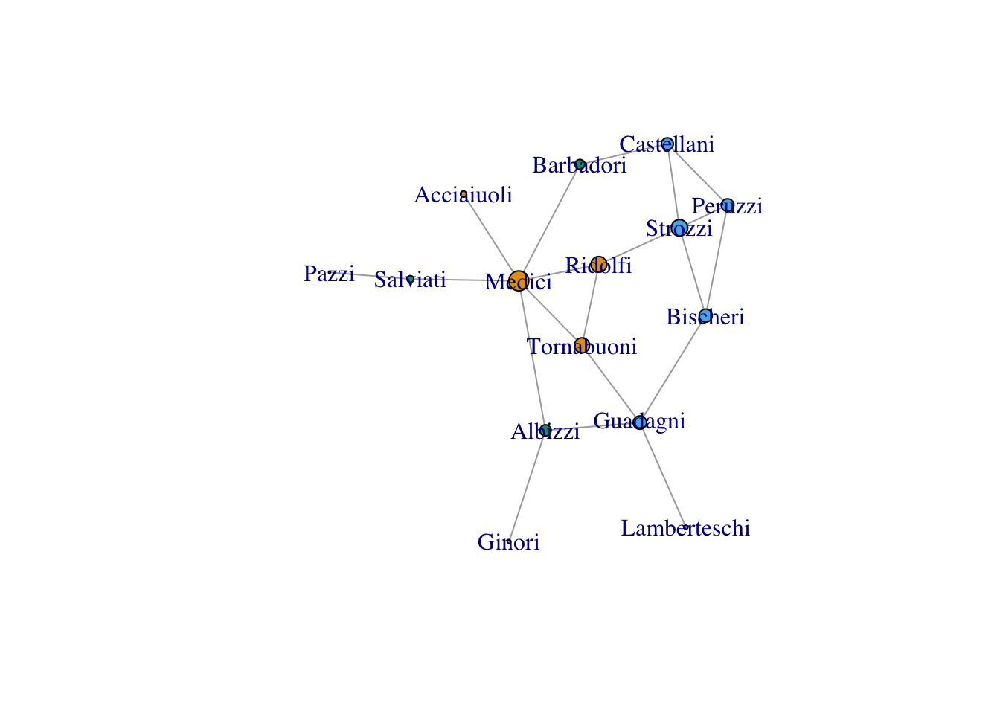
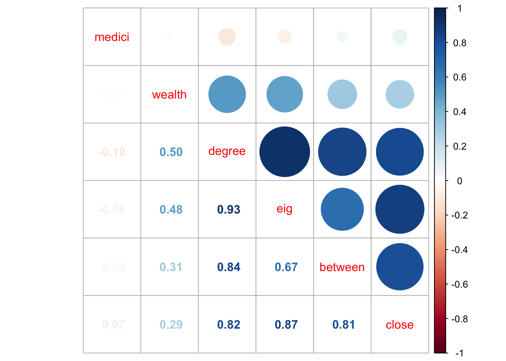
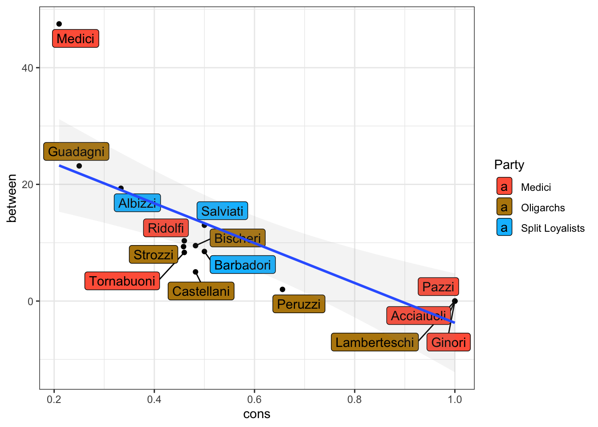
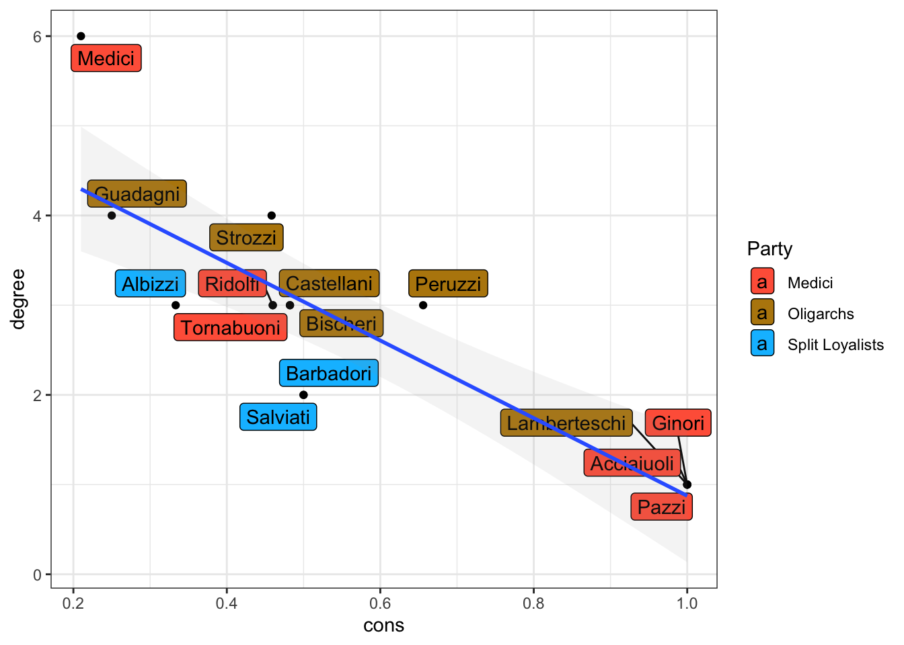
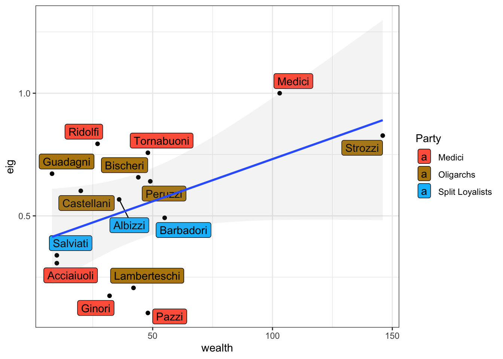

library(igraph)
library(ggplot2)
library(dplyr)
library(Hmisc)
library(CINNA)
library(intergraph)
import::from(sna, brokerage=brokerage)Week 5: Introduction to Centrality
Introduction
Background: At the individual level, one dimension of position in the network can be captured through centrality.
Conceptually, centrality is fairly straight forward: we want to identify which nodes are in the ‘center’ of the network. In practice, identifying exactly what we mean by ‘center’ is somewhat complicated.
Node Level Measures: Degree, Closeness, Betweenness, Power/Eigenvector
Graph Level measures: Centralization
Working with Centrality
Borgatti (2003; 2005) discusses centrality in terms of two key dimensions:
Substantively, the key question for centrality is knowing what is flowing through the network. The key features are:
Radial: Whether the actor retains the good to pass to others (Information, Diseases). Nodes are the endpoint. Medial: Whether they pass the good and then lose it (physical objects) - Nodes are itermediaries. Distance: Whether the ket factor is distance - typically paths separating nodes. Frequency: Whether the key factor is the number of alters one encounters (information)
The off-the-shelf measures do not always match the social process of interest, so researchers need to be mindful of this and the future of centrality may include induced measures that are more theoretically precise.

For the purposes of this workshop, we will need several packages starting with igraph for most of the network analysis, ggplot2 for some graphs, dplyr for data wrangling, Hmisc for constructing a correlation matrix, CINNA just to show the centrality options available, intergraph to move from igraph to sna and sna for looking at brokerage. We use import::from and select only the brokerage function from sna to avoid confusing dependencies.
Digging into Groups: Florentine Marriage Network
Let’s get a quick look at our exemplar data set:
The Florentine Marriage Network. Here, the nodes are families and the edges are marital ties. Florence around 1430 was experiencing rapid economic and political transformation and we see two points of struggle between the Medicis and the Strozzis.
We have this stored as a pajek file and can load it in the usual way into igraph.
flomarriage <- as_undirected(read_graph("data/flomarriage.net", format="pajek"))
wealth <- as.matrix(read.table("data/flowealth.clu", skip=1))
V(flomarriage)$wealth <- as.vector(wealth)
party <- as.matrix(read.table("data/floparty.clu"))
V(flomarriage)$party <- as.vector(party)
flomarriage <- delete_vertices(simplify(flomarriage), degree(flomarriage)==0)
plot.igraph(flomarriage, vertex.color=as.factor(V(flomarriage)$party))
Degree Centrality: Basic Measure of “Importance”
If we want a method that allows us to distinguish “important” actors, intuitively we may rely on popularity: The actor with the most ties is the most important: So our old friend degree is back!
Recall degree is the number of edges incident to a node - in an undirected graph this is the number of alters that you have. In igraph we use the degree function.
degree_centrality <- degree(flomarriage)plot.igraph(flomarriage, vertex.size=degree_centrality*5,
edge.arrow.size=.5, vertex.color=as.factor(V(flomarriage)$party))
Degree Centralization: A Graph Property
We can also construct degree as a graph property capturing the extent to which the graph is controlled by a single node: centr_degree in igraph.
centr_degree(flomarriage, normalized=T)$res
[1] 1 3 2 3 3 1 4 1 6 1 3 3 2 4 3
$centralization
[1] 0.2380952
$theoretical_max
[1] 210Here $res are the degree scores for each node, centralization is the graph level index, and the max is the theoretical maximum for the unnormalized graph if everyone was connected to everyone else and is the denominator in the normalization indicated by normalized=T.
Closeness Centrality: Inverse Distance
A second measure of centrality is closeness centrality. An actor is considered important if they are relatively close to all other actors.
Closeness (closeness in igraph) is based on the inverse of the geodesic path - or shortest distance - of each actor to every other actor in the network. This is typically normalized.
We can also calculate centralization for closeness: centr_clo in igraph.
close_centrality <- closeness(flomarriage, normalized=TRUE, mode="ALL")
cc <- centr_clo(flomarriage)
cc$centralization[1] 0.3224523plot.igraph(flomarriage, vertex.size=close_centrality*50,
edge.arrow.size=.5,
vertex.color=as.factor(V(flomarriage)$party))
Betweenness Centrality: Path Control
Borgatti and Everett (2020) call degree and closeness radial measures of centrality because they focus upon each node as an endpoint. Some questions ask us to consider the potential for nodes to mediate the flow of bits (e.g. information, disease, etc.). Betweenness centrality betweenness in igraph is a medial measure as it asks which nodes sit between other nodes. The score is the number of geodesics that a node sits on in a graph. This measure is frequently used to capture “structural holeness” of nodes.
between_centrality <- betweenness(flomarriage)plot.igraph(flomarriage, vertex.size=between_centrality/2,
edge.arrow.size=.5, vertex.color=as.factor(V(flomarriage)$party))
Power and Influence Centrality: Who Do You Know
We may also conceive of power as a measure of proximity. The powerful are connected to other powerful people. There are a series of “beta” centrality scores that weigh the power of proximate nodes: 1-step nodes power is weighed more heavily than 2-step nodes and so on.
Bonacich Power Centrality
power_centralityinigraphcaptures how an actor’s centrality (prestige) is equal to a function of the prestige of those they are connected to. Thus, actors who are tied to very central actors should have higher prestige/ centrality than those who are not.Eigenvector centrality
eigen_centralityinigraphis often conceptualized as a capturing influence. Eigenvector centrality is a relative measure where connections to high-scoring nodes are more highly weighted. PageRank is a version of eigenvector centrality.
bonacich_centrality <- power_centrality(flomarriage)
eig_centrality <- eigen_centrality(flomarriage)
ce <- centr_eigen(flomarriage)
print(ce$centralization)[1] 0.5277086
Quick addition: K-Core Decomposition
This can be an interesting way to think about kind of subgraph groupiness as a type of centrality. The k-core is the maximal subgraph where each vertex has at least k degrees. This is useful for very large graphs like Gonzales-Bailon et al. (2011).
coreness in igraph decomposes cores.
coreness(flomarriage) Acciaiuoli Albizzi Barbadori Bischeri Castellani Ginori
1 2 2 2 2 1
Guadagni Lamberteschi Medici Pazzi Peruzzi Ridolfi
2 1 2 1 2 2
Salviati Strozzi Tornabuoni
1 2 2 median(coreness(flomarriage))[1] 2Let’s look at the relationship between scores
First we can look at some bivariate relationships.
ecent <- eig_centrality$vector
flo.df <- data.frame(V(flomarriage)$name, V(flomarriage)$party, V(flomarriage)$wealth,
degree(flomarriage), closeness(flomarriage), betweenness(flomarriage), eig_centrality$vector)
flo.df <- rename(flo.df, c(family = 1, party=2, wealth=3, degree=4, close=5, between=6, eig=7))
flo.df <- flo.df %>% mutate(medici=recode(party, 'Medici'='1', "Split"='0', 'Oligarch'='0'))
nflo.df <- flo.df[,3:8]
cmat <- rcorr(as.matrix(nflo.df))
corrplot::corrplot.mixed(cmat$r, order = 'AOE')
We can also evaluate the relationship between wealth and centrality using OLS regression using lm in base R.
wlth.reg <- lm(wealth~medici + between, data=flo.df)
summary(wlth.reg)
Call:
lm(formula = wealth ~ medici + between, data = flo.df)
Residuals:
Min 1Q Median 3Q Max
-49.625 -19.556 -1.115 10.776 101.038
Coefficients:
Estimate Std. Error t value Pr(>|t|)
(Intercept) 36.4184 14.8810 2.447 0.0307 *
medici1 -1.8467 19.8027 -0.093 0.9272
between 0.9154 0.8069 1.134 0.2788
---
Signif. codes: 0 '***' 0.001 '**' 0.01 '*' 0.05 '.' 0.1 ' ' 1
Residual standard error: 37.54 on 12 degrees of freedom
Multiple R-squared: 0.097, Adjusted R-squared: -0.0535
F-statistic: 0.6445 on 2 and 12 DF, p-value: 0.5422Regressions of this type violate the independence assumption of standard regressions and, while somewhat commonly used, you may want to bootstrap standard errors. You can use the boot package for this among a few other strategies.
Centrality Plots
Next, we can graphically compare centrality scores to how constrained families are within the network. First, we compare betweenness with constraint. Recall that constraint is Burt’s measure of redundancy in an ego’s network.
library(ggplot2)
library(ggrepel)
flo.df$cons <- constraint(flomarriage)
flo.df$prty <- as.numeric(as.factor(flo.df$party))
ggplot(flo.df, aes(x = cons, y = between)) +
geom_point() +
geom_label_repel(aes(label = family, fill = factor(prty + 4)), max.overlaps = Inf) +
geom_smooth(method = "lm", se=TRUE, alpha=.1) +
scale_fill_manual(
values = c("tomato", "darkgoldenrod", "deepskyblue"),
name = "Party",
breaks = c("5", "6", "7"),
labels = c("Medici", "Oligarchs", "Split Loyalists")
) +
theme_bw()
Degree by Constraint
ggplot(flo.df, aes(x=cons, y=degree)) +
geom_point() + geom_label_repel(aes(label=family, fill = factor(prty+4)), max.overlaps=Inf)+
geom_smooth(method='lm', se=TRUE, alpha=.1) +
scale_fill_manual(values=c("tomato", "darkgoldenrod", "deepskyblue"),
name="Party",
breaks=c("5", "6", "7"),
labels=c("Medici", "Oligarchs", "Split Loyalists"))+
theme_bw() 
Wealth by Influence
ggplot(flo.df, aes(x=wealth, y=eig)) +
geom_point() +
geom_label_repel(aes(label=family, fill = factor(prty+4)), max.overlaps=Inf) +
geom_smooth(method='lm', se=TRUE, alpha=.1) +
scale_fill_manual(values=c("tomato", "darkgoldenrod", "deepskyblue"),
name="Party",
breaks=c("5", "6", "7"),
labels=c("Medici", "Oligarchs", "Split Loyalists"))+
theme_bw() 
Exploring Centrality Further
Check out the CINNA package for an off-the-shelf centralities that you read about and want to explore. It has a lot of options!
Brokerage: Gould and Fernandez (1989)
Gould and Fernandez recognize - kind of following Borgatti and Brass’s (2019) claim that nodes matter for structure and not just structure for nodes - that nodes are playing different local roles especially as it pertains to mediation across groups. Their theoretical ideas about brokerage have had lasting influence, while their actual measurement strategies have maybe received less attention than deserved. The sna package has a function to calculate the brokerage roles that Gould and Fernandez identify.
First, we need to bring port the network from an igraph object to an sna object and we can use the asNetwork function in intergraph for that switch.
flonet <- asNetwork(flomarriage)Now we can use the brokerage function in sna to calculate the distribution of each brokerage. We need the network and the grouping attribute of interest (recall that Gould and Fernandez are explicitly interested in how nodes mediate across groups).
The matrix of observed brokerage scores is stored as $raw.nli and the aggregated observed scores is stored as raw.gli.
flobroker <- brokerage(flonet, party)
knitr::kable(flobroker$raw.nli, caption="Node-Level Brokerage Table")| w_I | w_O | b_IO | b_OI | b_O | t | |
|---|---|---|---|---|---|---|
| Acciaiuoli | 0 | 0 | 0 | 0 | 0 | 0 |
| Albizzi | 0 | 2 | 0 | 0 | 4 | 6 |
| Barbadori | 0 | 0 | 0 | 0 | 2 | 2 |
| Bischeri | 2 | 0 | 1 | 1 | 0 | 4 |
| Castellani | 0 | 2 | 1 | 1 | 0 | 4 |
| Ginori | 0 | 0 | 0 | 0 | 0 | 0 |
| Guadagni | 6 | 0 | 3 | 3 | 0 | 12 |
| Lamberteschi | 0 | 0 | 0 | 0 | 0 | 0 |
| Medici | 2 | 6 | 8 | 8 | 4 | 28 |
| Pazzi | 0 | 0 | 0 | 0 | 0 | 0 |
| Peruzzi | 2 | 0 | 0 | 0 | 0 | 2 |
| Ridolfi | 0 | 0 | 2 | 2 | 0 | 4 |
| Salviati | 2 | 0 | 0 | 0 | 0 | 2 |
| Strozzi | 0 | 2 | 3 | 3 | 0 | 8 |
| Tornabuoni | 0 | 0 | 2 | 2 | 0 | 4 |
knitr::kable(flobroker$raw.gli, caption="Aggregate Brokerage Table")| x | |
|---|---|
| w_I | 14 |
| w_O | 12 |
| b_IO | 20 |
| b_OI | 20 |
| b_O | 10 |
| t | 76 |
What do the brokerage strategies of the Florentine families suggest about how power is distributed in this network?